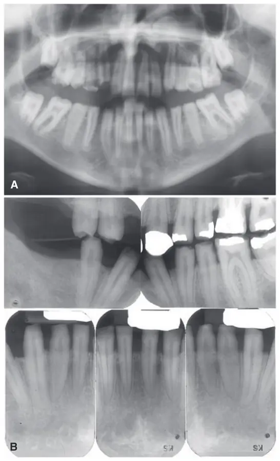
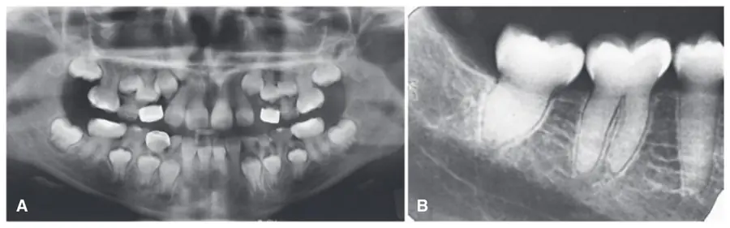

نسخه استخراجشده؛ ترجمه یا تأیید علمی انجام نشده است. وضعیت: captured
آملوژنزیس ایمپرفکتا (AI) یک بیماری نیست، یک گروه است — و سه شکل اصلیاش سه ظاهر رادیوگرافیک کاملاً متفاوت میسازند. کلید فهمشان یک پرسش ساده است: ضخامت مینا درست است یا دانسیتهاش؟

۱) هیپوپلاستیک — ضخامت کم، دانسیته طبیعی. مینا نازک است، پس رنگ عاج زیرین رنگ زرد-قهوهای به دندان میدهد. تاجها کوچک و تقریباً مربعیاند، کاسپها کوتاه یا غایب، سطوح اکلوزال تخت، و تماسهای بیندندانی باز یا پهن. ظاهر رادیوگرافیکش «نردهی چوبی» (picket fence) نامیده میشود. و مهم: کنتراست مینا و عاج طبیعی میماند. این شکل، سادهترین شکل برای تشخیص روی تصویر است.
۲) هیپوماچوریشن — ضخامت طبیعی، دانسیته برابر عاج. مینا ظاهری خالدار دارد، در بالین نرمتر از طبیعی است و میتواند از تاج جدا شود. روی تصویر، کنتراست طبیعی میان مینا و عاج از دست میرود. یک واریانتش تاجها را با مینای سفید مات میپوشاند — دندانهای «برفپوش» (snow-capped).
۳) هیپوکلسیفیکاسیون — ضخامت طبیعی، دانسیته کمتر از عاج. شایعتر از شکل هیپوپلاستیک. تاجها هنگام رویش طبیعیاند، ولی مینای نرم بهسرعت پس از ورود به عملکرد میشکند و بعد عاج نرمتر هم سریع ساییده میشود — گاهی تا سطح لثه. سوند زیر فشار در مینا فرو میرود، ولی پوسیدگی در این دندانها غیرمعمول است. نفوذپذیری بالای مینا آن را لکهدار و تیره میکند؛ دندانهای جوانان مبتلا اغلب قهوهای تیرهاند.
و شکل چهارم: هیپوماچوریشن-هیپوپلاستیک همراه با تاورودونتیسم — ترکیبی که نامش خودش را توضیح میدهد.
و افتراق از دنتینوژنزیس ایمپرفکتا: اگر سایش پیشرفته باشد و عاج ثانویه اتاقک پالپ را پر کرده باشد، AI میتواند شبیه DI به نظر برسد. سه جداکننده به نفع DI: تاجهای پیازی، ریشههای باریک، و دانسیتهی نسبتاً طبیعی مینای باقیمانده.
دنتینوژنزیس ایمپرفکتا (DI) — «عاج اوپالسنت ارثی». الگوی وراثت اتوزومال غالب، در دو جنس یکسان، و هر دو دندان شیری و دائمی درگیر.

سه نوع و ژنهایشان: نوع I همراه استئوژنزیس ایمپرفکتا، از جهش COL1A1 یا COL1A2، نوع II فقط عاج بدون نقص اسکلتی، از جهش DSP/DSPP، نوع III یا «ایزولهی براندیواین»، که اتاقک پالپ بزرگشده دارد و بیشتر مستعد اکسپوز پالپ است.
و یک عدد که باید بدانی: DI در حدود ۲۵٪ موارد استئوژنزیس ایمپرفکتا دیده میشود — اختلالی ارثی در سنتز کلاژن نوع I با استخوانهای شکننده، صلبیهی آبی، استخوانهای ورمین، و مالاکلوژن کلاس III.
و امضای تصویری DI: تاجهای پیازی و گرد با تنگی مشخص در ناحیهی سرویکال، تاج کوتاهتر از طبیعی، ریشههای کوتاه، و اتاقک پالپ که ابتدا بزرگ است و ظاهر «خارِ شتر» (thistle) میسازد، ولی با گذشت زمان بهسرعت با عاج پر میشود تا کانالها نخمانند یا کاملاً محو شوند.
و درمانش یک هشدار مهم دارد: گذاشتن روکش پروتزی معمولاً ناموفق است مگر ریشه پشتیبانی خوبی داشته باشد؛ در بیماران ۵ تا ۱۵ ساله دندانها نباید کشیده شوند، و اوردنچر کامل برای پیشگیری از تحلیل آلوئول ترجیح دارد.
دیسپلازی عاجی (dentin dysplasia) — اتوزومال غالب، بسیار نادرتر از DI: نسبت ۱ در ۱۰۰٬۰۰۰ در برابر ۱ در ۸٬۰۰۰.
و مهمترین نشانهی شناسایی دیسپلازی عاجی نوع I: حدود ۲۰٪ این دندانها با استئیت رارفاکتیو همراهاند — احتمالاً از ارتباطهای میکروسکوپی میان پالپ باقیمانده و حفرهی دهان. همراهی بیماری التهابی پریاپیکال با دندانهای بدون پوسیدگی، ویژگی مهمی برای شناخت این بیماری است.
و افتراق DI از دیسپلازی عاجی: هر دو میتوانند تاج رنگعوضکرده و پالپ محوشده بسازند. یافتن اتاقک پالپ خارشتریشکل در یک دندان تکریشه، احتمال دیسپلازی عاجی را تقویت میکند؛ و در نوع II، محو شدن پالپ پس از رویش رخ میدهد، نه پیش از آن.